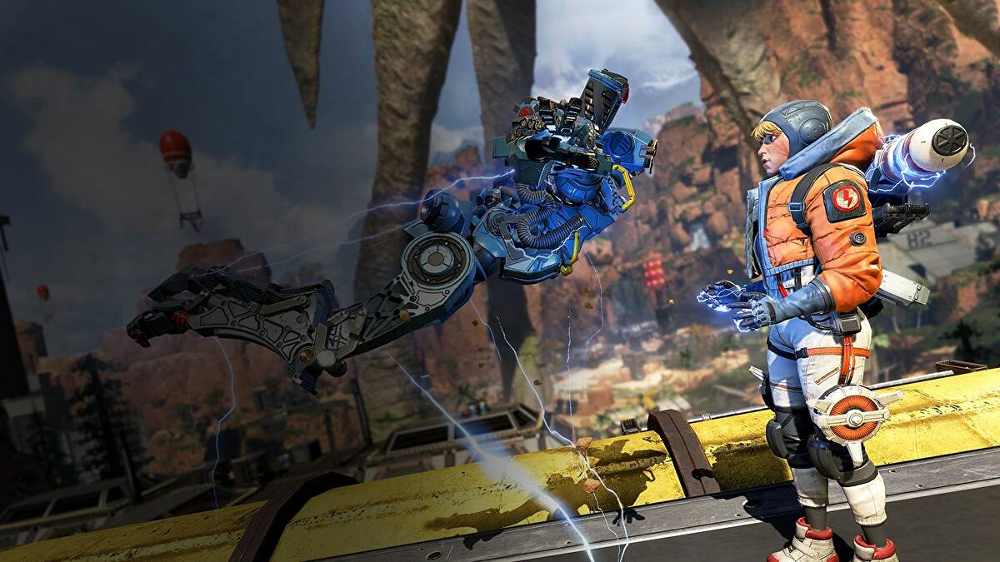

Tanım
Apex Legends, Respawn Entertainment tarafından geliştirilen ve
Electronic Arts. tarafından yayınlanan, ücretsiz bir Battle Royale
oyunudur. Titanfall ile aynı evrende geçen oyun, Microsoft Windows,
PlayStation 4 ve Xbox One için 4 Şubat 2019'da piyasaya sürüldü. Apex
Legends'ta 60 oyuncu 3'erli takımlar halinde karşı karşıya
gelmektedir. Oyuncuların haritaya indikten sonra silah ve
ekipmanlarını toparlayıp mücadeleye giriş yapmaları gerekmektedir.
Apex Legends'ı aynı tarz oyunlardan ayıran bir özelliği de, farklı
yeteneklere sahip karakterleri seçip oynamaya başlayabilirsiniz.
Oyunda; Ağır Saldırı Tüfekleri, Alt Makineli Silahlar, Hafif Makineli
Tüfekler, Keskin Nişancı Tüfekleri, Çifte Tüfekleri ve Tabancalar
bulunmaktadır. Legendslar ise; Saldırı, Savunma, Destek ve Keşif
sınıflarından oluşmaktadır.
Harita
Oyunun şu an için tek haritası olan King’s Canyon 3 farklı kategoride,
25 bölgeye ayrılmış bir savaş alanı. Oyuncular uçaktan atladıktan
sonra olası en güvenli bölgeye inip sağdan soldan ekipman toplamaya
çalışıyor. Tabii tam tersini de yapabilirsiniz: Daha sıcak bölgelere
inip hayatta kalırsanız, oyunun başlarında çok iyi bir ekipmana da
sahip olabilirsiniz. Çoğu oyuncu aksini iddia etse de King’s
Canyon’da, Loot Tier yani ‘ekipman seviyesi’ olarak bilinen bölgeler
değişiklik gösterebiliyor. Fakat haritanın deniz kısmına daha yakın
sınır bölgeleri her daim yüksek seviye ekipman düşürme şansına sahip.
Bu bölgelerden farklı olarak maç başlamadan önce normalden daha yüksek
seviyeye sahip bir bölge belirleniyor. Burada standart silahlardan
farklı olarak efsanevi silahları bulma şansınız oluyor. Bu yüzden maç
başlarında oyunun en sıcak bölgesi de rastgele belirlenmiş bu alan
oluyor. Bir diğer sıcak bölge, haritanın üzerinde dolaşan ufak bir
indirme gemisi. Bu gemi hareket halinde olduğu için üzerine atlamak
bazen zor olabiliyor. Eğer doğru zamanda atlayıp, gemiye inebilirseniz
burada da yüksek seviye ekipman bulma şansınız mevcut. Elbette sizin
gibi düşünen diğer oyuncuları da hesaba katmanız gerekiyor.

Ekipman
Ekipmanlar 4 farklı kategoride listeleniyor. Ekipman derken, bunlara
silahları (Efsanevi silahlar hariç) katmıyoruz. Gövde ve kask (Zırh),
silah aparatları, kalkanlar ve yardımcı aparatlar özelliklerine göre
farklı kategorilere ayrılıyor. Beyaz renkli zırhlar, başlangıç
seviyesini belirtiyor. Mavi ve mor daha üst sevideki zırhlar için
geçerli ve karakterinize daha yüksek zırh seviyesi sağlıyor. Eğer
şanslıysanız, turuncu renkteki efsanevi zırhlardan birini
bulabilirsiniz. İşte o zaman sırtınız yere kolay kolay gelmez. Aynı
kategorilendirme, silah aparatları ve diğer ekipmanlar için de
geçerli. Oyunun başında yüksek seviyede bir teçhizat toparlayabilir ve
iyi strateji yapabilirseniz, sona kalan takımlardan biri
olabilirsiniz. Bu yüksek seviyeli ekipmanın nerede ve ne şartlar
altında çıkacağı tamamen şans. Sadece maç başındaki sıcak bölgelerde
çıkma oranının yüksek olduğunu biliyoruz.

Rank Sistemi
Apex Legends’ın dereceli lig sistemi diğer oyunlardan aşikâr olduğumuz
üzere puan getiren maçlardan, lig sonunda bulunan sıfırlamalardan ve
ödüllerden oluşuyor. Lig sistemi derecelendirmesi sırayla; Bronze,
Silver, Gold, Platinium, Diamond ve en üst lig olan Apex Predator
olarak 6’ya ayrılıyor. Her lig kendi içinde 4 adet küme bulunduruyor.
10. seviyeye ulaştığınızda artık rekabetçi maçlara girebiliyorsunuz.
Güzel bir rekabet eşliğinde lig ve küme atlamaya çalışacaksınız.
Oyuncular her lig ve küme ilerlemesinde giderek artan ‘’RP’’ ödülü ile
karşılaşmaktadır. Ayrıca maça girme sayısına, öldürülen rakip oyuncu
sayısına, ilk 10/5/3’e girme sayısına ve şampiyonluğa göre RP ödülleri
veriliyor.
{kind=link}
{kind=link}